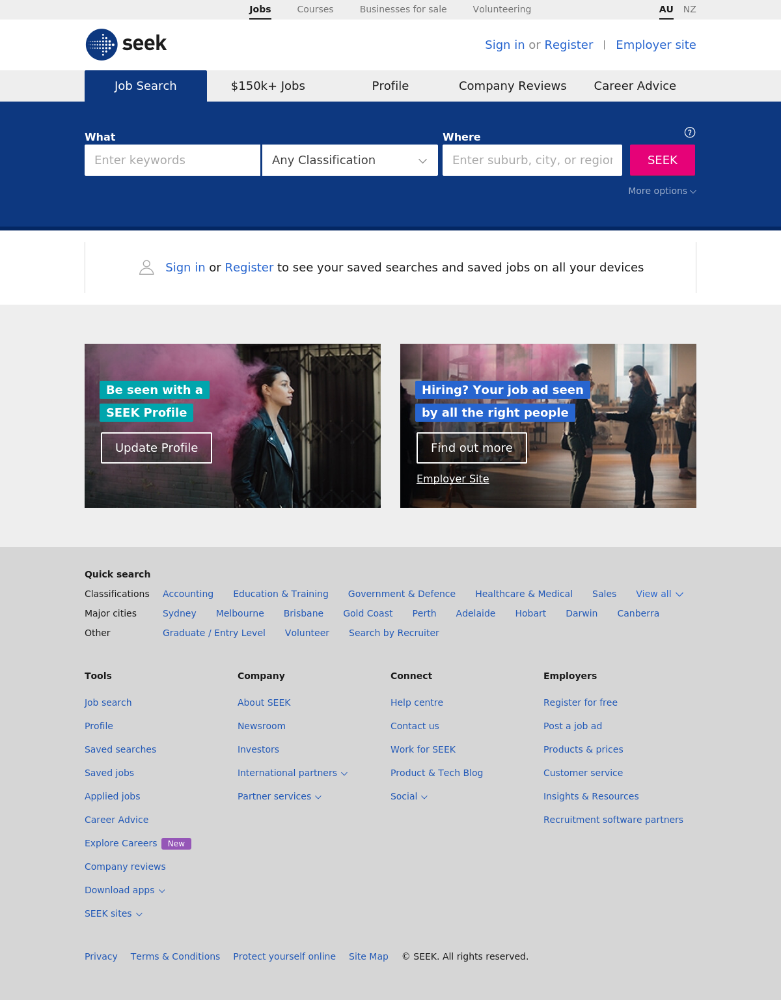

Screeshot
Port 80 Port 443
 
Dig Info
; <<>> DiG 9.11.4-2-Debian <<>> w.seek.com.au
;; global options: +cmd
;; Got answer:
;; ->>HEADER<<- opcode: QUERY, status: NOERROR, id: 23601
;; flags: qr rd ra ad; QUERY: 1, ANSWER: 2, AUTHORITY: 0, ADDITIONAL: 0
;; QUESTION SECTION:
;w.seek.com.au. IN A
;; ANSWER SECTION:
w.seek.com.au. 5 IN A 52.64.134.99
w.seek.com.au. 5 IN A 13.55.41.93
;; Query time: 2003 msec
;; SERVER: 192.168.58.2#53(192.168.58.2)
;; WHEN: Tue May 21 15:56:18 EDT 2019
;; MSG SIZE rcvd: 63
Host Info
w.seek.com.au has address 13.55.41.93
w.seek.com.au has address 52.64.134.99
Response Header
Nmap Results
nmap -sV -T3 -Pn -p3868,3366,8443,8080,9443,9091,3000,8000,5900,8081,6000,10000,8181,3306,5000,4000,8888,5432,15672,9999,161,4044,7077,4040,9000,8089,443,7447,7080,8880,8983,5673,7443
Starting Nmap 7.70 ( https://nmap.org ) at 2019-05-21 15:57 EDT
Nmap scan report for w.seek.com.au (13.55.41.93)
Host is up.
Other addresses for w.seek.com.au (not scanned): 52.64.134.99
rDNS record for 13.55.41.93: ec2-13-55-41-93.ap-southeast-2.compute.amazonaws.com
All 33 scanned ports on w.seek.com.au (13.55.41.93) are filtered
Service detection performed. Please report any incorrect results at https://nmap.org/submit/ .
Nmap done: 1 IP address (1 host up) scanned in 13.64 seconds